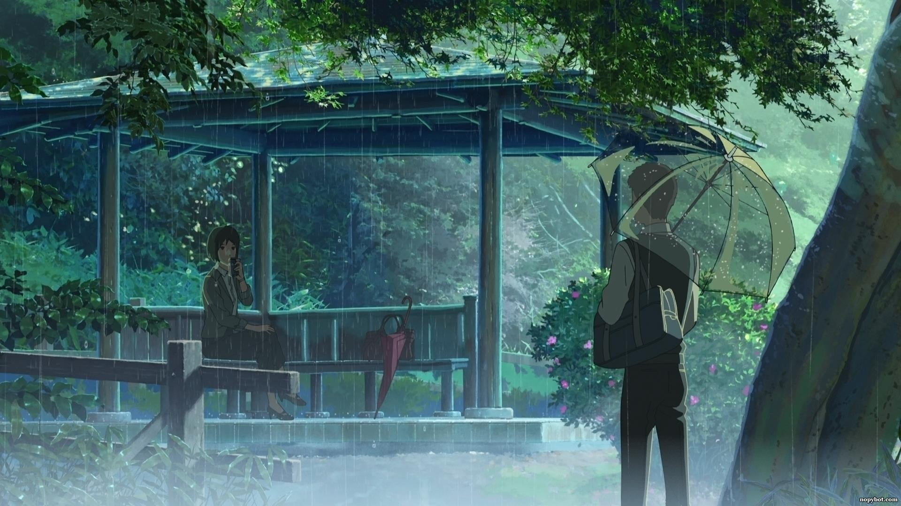

O Jardim das Palavras centra-se em Takao Akizuki, um aspirante designer de sapatos de 15 anos
de idade, e Yukari Yukino, uma misteriosa mulher de 27 anos, em que ficam reunidos no Jardim
Nacional Shinjuku Gyoen nas manhãs chuvosas. Enquanto Takao ignora as aulas da escola pela manhã
para desenhar sapatos, Yukino evita o trabalho devido a problemas pessoais que se transportam para a
vida profissional. Yukino não diz nada sobre si à Takao, enquanto Takao abre-se para ela,
compartilhando sua paixão por sapatos, oferecendo-se para lhe fazer um par. Quando Takao passa a
saber da identidade de Yukino, as emoções emergem.
Yukari Yukino|Takao Akizuki

Uma das partes mais relevante dos filmes são suas trilhas sonoras que proporcionam a imerção na
trama.
Elas são divididas em 3 partes sendo ela abertura(opening),tema(main song) e
final(ending)
Opening (Yumetourou)
Main Song (sparkle)
Ending (Nandemonaiya)
Se você ja viu sobre os filmes responda o
Formulario